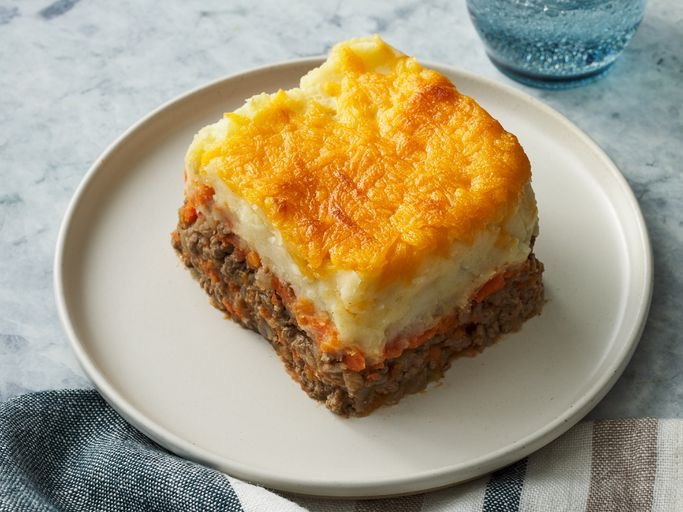

SHEPARD'S PIE!!

this shepard's pie will absolutely destroy you!!
shepard's is delicious, you should make and eat it right now!!! do it.
SHEPHERD'S PIE RECIPE
- 5 Yukon gold potatoes, peeled
- 7 tbsp unsalted butter, divided
- 1 small onion, finely diced
- 2 carrots, peeled and finely diced
- 1 celery stalk, finely diced
- 1 cup pearl onion, peeled
- 1 cup cremini mushrooms, diced
- 1 tbsp tomato paste
- 1 cup beef stock
- salt and pepper
- 2 cups leftover diced meat, like braised beef short rib
- 2 cup veal demi glace
- 1/4 cup chopped parsley
- 1 cup freezer peas
DIRECTIONS:
- potatoes until soft enough to effortlessly pierce with a paring knife, about 30 minutes.
- Drain
- Heat a pan over medium-high.
- Add in 3 tablespoons of butter, onion, carrot, celery pearl onion and mushrooms.
- ook until fragrant and tender, about 5 minutes.
- Add in tomato paste and beef stock. Continue to cook until liquid has reduced by half. Season with salt and pepper.
- Stir in meat, demi-glace, and parsley.
- Preheat oven to 375F.
- Gently mash the potatoes with 3 tablespoons butter and season with salt.
- Continue to mash until the mixture is smooth and even.
- Place the meat mixture into a baking dish.
- Cover with mash potatoes.
- Using a spatula or fork, hatch a rough pattern into the surface.
- Bake in preheated oven until the surface of the pie is golden, about 1 hour.
- Remove from oven and let rest for a minimum of 15 min.
- Meanwhile, melt the remaining 1 tablespoon of butter in a small pot.
- Stir in peas until heated through.
- Serve with shepherds pie.